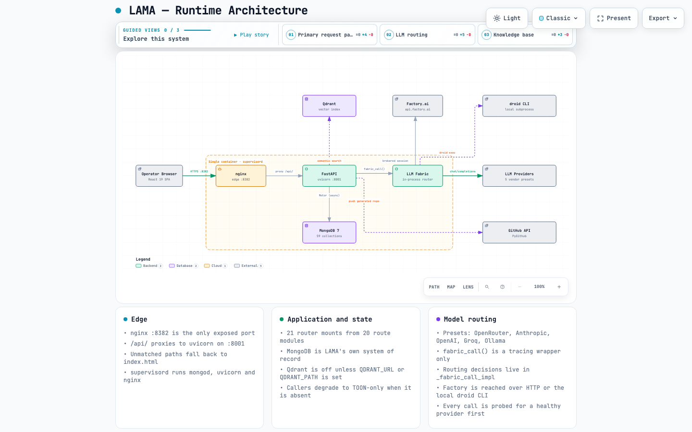
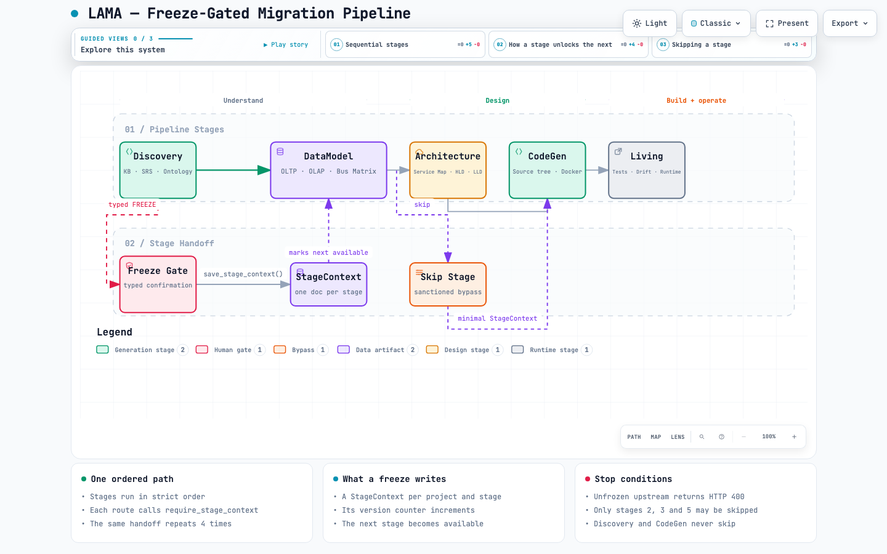
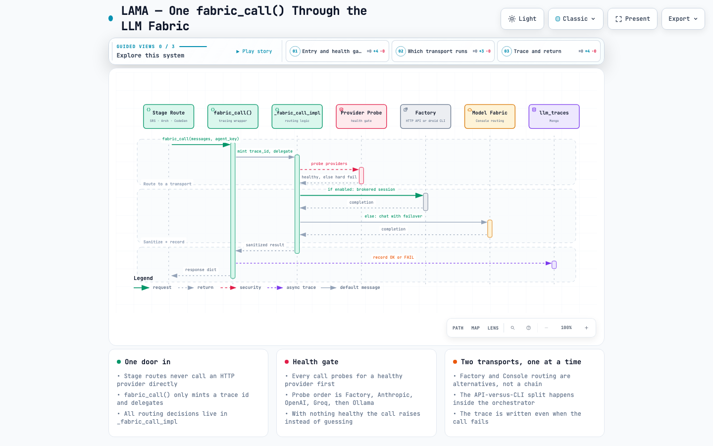
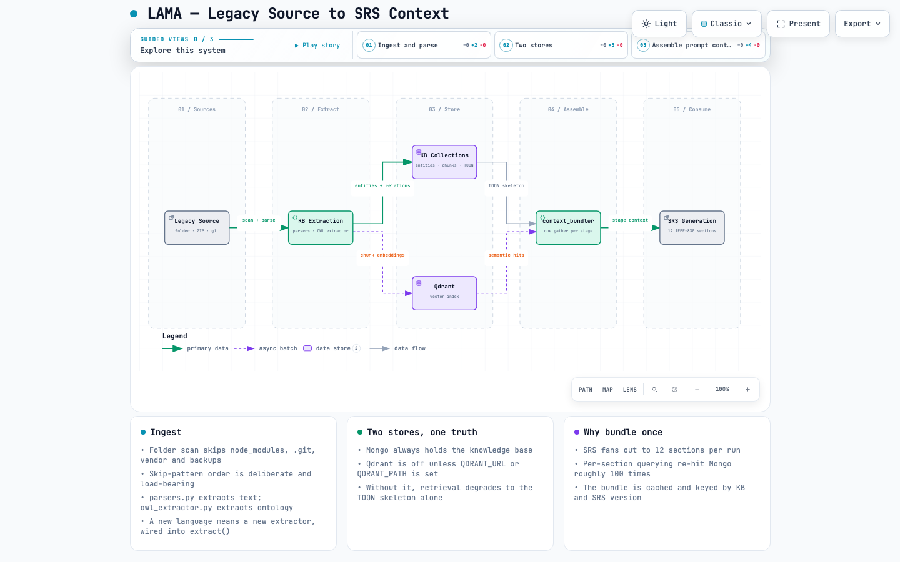
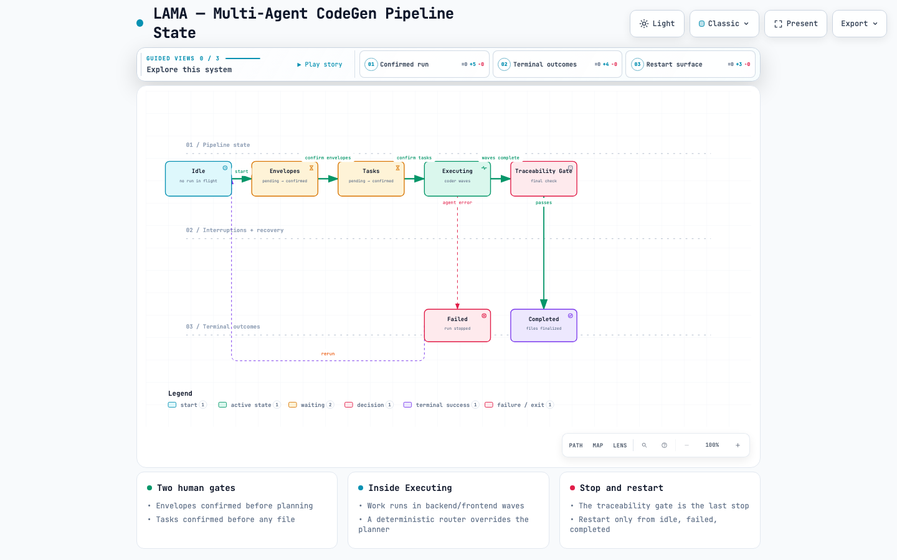

LAMA — Legacy Application Modernization & Alignment is a full-stack, AI-assisted migration studio. You point it at a folder of legacy code — PHP/CodeIgniter, JSP, .NET, Python, JavaScript — and it walks that application through a deterministic five-stage pipeline, producing freezable, GitHub-pushable artifacts at every stage.
The reference pilot is the PMIS Migration Pilot: PHP 8 / CodeIgniter 4 / MariaDB → FastAPI / Python 3.12 / PostgreSQL.
| # | Stage | Produces | Freeze unlocks |
|---|---|---|---|
| 1 | Discovery | Knowledge base (YAML/TOON), IEEE-830 SRS (12 sections), business ontology | DataModel |
| 2 | DataModel | OLTP DDL, OLAP DDL, Kimball bus matrix, 3 migration scripts | Architecture |
| 3 | Architecture | Service map, HLD, LLD, API contracts, sequence diagrams | CodeGen |
| 4 | CodeGen | Per-service source tree, Dockerfiles, ZIP, GitHub push | Living |
| 5 | Living | Selenium tests, SRS-drift detection, runtime observability | — |
pipeline.require_stage_context(...) and returns HTTP 400
if the upstream stage is not frozen. The only sanctioned bypass is marking an
intermediate stage skipped, which writes a minimal StageContext so the
downstream gate still passes.Not all work flows through the five stages. Two independent tracks exist and neither requires a frozen upstream stage:
Gap Analyzer compares code against an SRS, FRS or user manual and reports the gaps; it has its own freeze/unfreeze and export. Transformer is a standalone code-transform super-agent (for example Helidon→Spring Boot, Oracle→PostgreSQL).
An agentic alternative to single-shot Stage-4 generation. It does require a frozen Architecture. Backend and tests only — the UI still drives the single-shot flow, so the page does not exercise this path.
Versions below are read from backend/requirements.txt,
frontend/package.json and the Dockerfile. Treat them
as pinned — do not bump them silently.
| Component | Version | Role |
|---|---|---|
| Python | 3.11-slim-bookworm | Runtime image |
| FastAPI | 0.110.1 | HTTP API, 21 router mounts |
| Uvicorn | 0.25.0 | ASGI server |
| Motor / PyMongo | 3.3.1 / 4.5.0 | Async MongoDB driver |
| Pydantic | 2.13.4 | Models and validation |
| httpx | 0.28.1 | All outbound LLM/provider calls |
| qdrant-client | 1.18.0 | Vector index (optional) |
| sentence-transformers | 5.5.0 | Local embeddings |
| PyGithub | 2.9.1 | Repository push |
| PyYAML | 6.0.3 | KB context export |
| python-jose · passlib | 3.5.0 · 1.7.4 | JWT and bcrypt |
| langgraph · langchain-core | 0.2.60 · 0.3.29 | Opt-in confidence engine |
| dulwich | >=1.2.5,<2.0 | Pure-Python git fallback |
| Component | Version | Role |
|---|---|---|
| React · React DOM | ^19.0.0 | UI runtime |
| react-router-dom | ^7.5.1 | Routing |
| CRA · CRACO | 5.0.1 · ^7.1.0 | Build toolchain |
| Tailwind CSS | ^3.4.17 | Styling, with Radix UI + shadcn/ui |
| axios | ^1.8.4 | API client, 600 s timeout |
| D3 · Mermaid | 7.9.0 · ^11.15.0 | ER diagrams and rendered diagrams |
| Monaco Editor | ^4.7.0 | Generated-code editing |
| Recharts | ^3.6.0 | Admin analytics |
| react-resizable-panels | 2.1.7 pinned | Panel layout |
| yarn | 1.22.22 | Package manager — never npm |
| Component | Role |
|---|---|
| MongoDB 7 | LAMA's own system of record — 59 collections. PostgreSQL is the migration target, never LAMA's store. |
| Qdrant | Optional semantic index. Inert unless QDRANT_URL or QDRANT_PATH is set; callers degrade to TOON-only. |
| LLM providers | Five vendor presets — OpenRouter, Anthropic, OpenAI, Groq, Ollama — plus a custom scaffold. |
| Factory.ai | Optional per-project brokered execution, over HTTP API or the local droid CLI. |
LAMA ships as a single container. supervisord runs three
processes — mongod, uvicorn and nginx —
and exposes exactly one port.

architecture/diagrams/lama-runtime.html| Hop | Behaviour |
|---|---|
| Browser → nginx | Port 8382 is the only exposed port. |
| nginx → FastAPI | /api/ proxies to 127.0.0.1:8001. /health maps to /api/health. |
| Static assets | Served from /usr/share/nginx/html; unmatched paths fall back to index.html for the SPA. |
| FastAPI → Mongo | Motor async driver; the single source of truth for collection accessors is backend/db.py. |
| FastAPI → Qdrant | Optional. Off unless a URL or embedded path is configured. |
client_max_body_size 100M for ZIP uploads,
proxy_buffering off so SSE streams are not held back, and
600 s read/send timeouts for long generation jobs. The SPA shell is
served no-store; hashed assets cache immutably for a week.The pipeline is the spine of the product. Each stage is unlocked only by freezing the one before it, and a freeze is a deliberate, typed human action.

architecture/diagrams/lama-pipeline.html| # | Step | What happens |
|---|---|---|
| 1 | Operator types the word | Freeze and reset gates require a typed FREEZE / RESET in the UI. Intentional friction — do not weaken it. |
| 2 | Confidence engine votes | Two to three independent models score the artifact section by section against the knowledge base. Results land in stage_confidence as per-stage badges; responses that do not match the JSON schema are discarded from the vote. |
| 3 | StageContext is written | save_stage_context() upserts one document per (project_id, stage) and auto-increments its version. |
| 4 | Next stage is promoted | Promotion is implicit — the handler sets project.stage_status[N+1] = "available". |
Every model call in the product goes through one entry point. Stage routes never call a provider over HTTP directly.

fabric_call(), from stage route to provider
and back. Interactive version:
architecture/diagrams/lama-fabric-call.htmlfabric_call() itself is only a tracing wrapper — it
mints a trace id and delegates; every routing decision lives in
_fabric_call_impl. Each call also probes for a healthy provider
first (Factory, then Anthropic, OpenAI, Groq, Ollama) and raises rather than
guessing if none is. Both outcomes reach llm_traces, so a failure
is as traceable as a success.| Mode | When it runs |
|---|---|
| Console routing default | AGENT_COMPLEXITY[agent_key] picks a tier; provider.routing[tier] picks the model. Failover walks every active provider on quota or auth errors. |
| Factory API | Brokered to api.factory.ai when the project enables it. Poll-based; slow agents get a longer timeout and a shrink-and-retry path. |
| Factory CLI | LAMA_FACTORY_MODE=cli drives the local droid binary. The API-versus-CLI choice is made inside the orchestrator — from llm.py there is one Factory door. |
Each agent key carries a tier that the Console maps to a concrete model — no hard-coded vendor defaults at call sites.
high — srs.regenerate,
datamodel.oltp, arch.recommend,
arch.hld, codegen.planner,
codegen.coder_be, codegen.coder_fe.
medium — srs.generate,
arch.lld, codegen.verifier,
codegen.reviewer, codegen.tester.
low — srs.gap_question,
datamodel.bus_matrix, codegen.build_tool_selector,
codegen.finalizer.
Discovery turns unstructured legacy source into typed, queryable context that every later stage consumes.

architecture/diagrams/lama-discovery-kb.htmlSource arrives as a folder scan, a ZIP upload or a git clone. The folder
scanner deliberately skips node_modules, .git,
vendor, __pycache__ and backup patterns
(*.bak, *.save, *_bkp,
*_old, *_backup, *.php_*).
The order of these patterns matters — it fixed a real defect.
kb/parsers.py extracts text per file type (PHP, SQL, PDF,
DOCX, CSV, TXT, ZIP); kb/owl_extractor.py derives the ontology —
classes, methods, tables, columns, relations, roles. It is
language-agnostic: a new language means an
extract_<lang> function wired into both
extract() and extract_zip().
Discovery produces an IEEE-830 style SRS in 12 sections:
introduction, overall_description,
actors_use_case_inventory, specific_requirements,
detailed_use_cases, external_interfaces,
non_functional_requirements,
integration_requirements, validation_verification,
traceability_matrix, appendices and
entity_model.
context_bundler.build_stage_context() gathers everything a stage
prompt needs in one pass and caches it, keyed by project, stage, KB version,
SRS version and target stack — so a KB rebuild or SRS edit invalidates it
automatically. SRS fans out to 12 sections; re-querying Mongo per section is
the problem this was written to kill.An agentic alternative to single-shot Stage-4 generation, driven by a state
machine in one codegen_pipeline_state document per project. It
requires a frozen Architecture.

architecture/diagrams/lama-codegen-multiagent.htmlcontext_manager → build_tool_selector → planner → coder_be |
coder_fe → verifier → reviewer → tester → traceability_gate →
finalizer, after a super_agent initialises the run. The
coders draw a high tier model, the finalizer low.
_route_task_to_coder() then overrides from the
target path. Unambiguous backend paths go to coder_be,
unambiguous frontend paths to coder_fe; only truly ambiguous
paths keep the Planner's choice. A frontend file must never reach the backend
coder.| Status | Meaning |
|---|---|
idle | No run in flight |
envelopes_pending → envelopes_confirmedtasks_pending → tasks_confirmed | The two human gates — envelopes discovered, then tasks planned, each awaiting confirmation |
executing | Coder waves, split backend/frontend |
traceability_gate | Final check before finalize |
completed · failed | Terminal — a run restarts only from idle, failed or completed |
backend/db.py is the single source of truth for
collections — 59 of them. A new collection is added there or it does not
exist. Thirty-nine are project-scoped and indexed as such by
ensure_indexes() at startup.
| Group | Collections |
|---|---|
| Core & Discovery | projects, kb_files, kb_chunks, kb_entities, kb_toon, kb_deep_analysis, conversations, messages, srs_documents, prompts, project_prompts, freeze_gates, audit_log, stage_context |
| Stage 2 · DataModel | data_models, bus_matrix, olap_models, migration_artifacts |
| Stage 3 · Architecture | arch_documents, arch_services |
| Stage 4 · CodeGen | codegen_files, codegen_runs, parity_runs |
| Stage 5 · Living | living_artifacts, living_runs, ontology_snapshots, business_ontologies |
| Multi-agent CodeGen | codegen_envelopes, codegen_tasks, codegen_agent_runs, codegen_pipeline_state |
| Transformer | transformer_envelopes, transformer_tasks, transformer_agent_runs, transformer_agent_configs |
| Tools | gap_analyses, gap_analysis_files, transformations, transform_files, tools_kb |
| Graph & journeys | legacy_analysis, kb_graph, kb_journeys, kb_journey_config |
| Console | model_providers, agent_configs, token_usage_log |
| Multi-tenancy | tenants, users |
| Confidence | stage_confidence, living_reports |
| Sessions & tracing | agent_sessions, llm_traces |
| Other | github_configs, data_sources, project_integrations, kb_git_sources, kb_module_selection, factory_workspaces |
{user, tenant}; a super-admin carries
tenant_id == "*". Any new route that reads project data must
scope by tenant, not by project_id alone.Everything mounts under /api. There are 21 router
mounts from 20 route modules — routes/datamodel.py
contributes two. One file per route concern; modules do not cross-import,
they go through pipeline.py.
| Prefix | Module | Concern |
|---|---|---|
/projects | projects.py | Project CRUD, tenant-scoped |
/projects | datamodel.py | Factory orchestrator config 2nd mount |
/kb | kb.py | Upload, scan, build, clone shared |
/kb | db_ingest.py | Live DB + app-URL ingestion shared |
/srs | srs.py | SRS generate, edit, freeze |
/data-model | datamodel.py | Stage 2 artifacts |
/architecture | architecture.py | Stage 3 jobs and artifacts |
/codegen | codegen.py | Stage 4, incl. multi-agent |
/living | living.py | Stage 5 |
/pipeline | pipeline.py | Skip/unskip, confidence |
/tools | tools.py | Gap Analyzer + Transformer |
/console | console.py | Providers, agents, usage |
/chat | chat.py | TOON-context chat |
/sessions | sessions.py | Rolling agent memory |
/context | context.py | Context-bundle inspection |
/auth · /admin | auth.py · admin.py | Login; tenant/user CRUD |
/prompts · /audit | prompts.py · audit.py | Prompt library; audit trail |
/github · /integrations | github.py · integrations.py | Push config; integration catalog |
/kb is served by both kb.py and
db_ingest.py, and /projects by both
projects.py and datamodel.py. This is by design, not
a collision to "fix".On the frontend, every backend call lives in
frontend/src/lib/api.js. A request interceptor attaches the
bearer token; a response interceptor clears credentials and redirects to
/login on HTTP 401.
# backend — hot reload on :8000 $ cd backend && uvicorn server:app --reload --port 8000 # frontend — CRA dev server on :3000 $ cd frontend && yarn install && yarn start
$ docker compose up -d $ docker compose logs -f lama $ curl http://127.0.0.1:8382/health # → {"ok":true} # after Python edits $ docker compose restart lama # after React edits — nginx serves the bind-mounted build $ (cd frontend && yarn build) && docker compose restart lama
supervisord starts three processes by priority:
10 mongod (bound to 127.0.0.1:27017, data in
/data/db), 20 uvicorn
(server:app on :8001, proxy headers trusted), and
30 nginx. On every backend start a FastAPI startup event
runs run_seed() — idempotent and safe on each boot — seeding the
prompt library, the PMIS pilot, agent configs, tier migrations and default
tenancy, then building indexes.
$ pytest backend/tests/ # ~70 suites $ pytest backend/tests/test_lama_v4.py -k test_chat -x $ pyflakes backend/routes/codegen.py # standing verification step
test_iter<N>_<topic>.py
and pin one iteration's behaviour — read the matching
memory/PRD.md entry first. A 502 on chat-edit tests is
acceptable; they assert in (200, 502).| Variable | Purpose |
|---|---|
MONGO_URL · DB_NAME | Required. System of record. |
OPENROUTER_API_KEY | Needed for any meaningful LLM call via the env fallback path. |
LAMA_DEFAULT_MODEL | Deliberately empty — the Console's routing table picks per agent key. |
QDRANT_URL · QDRANT_API_KEY | Remote vector index. Optional. |
QDRANT_PATH | Embedded on-disk vector engine — no server needed. |
LAMA_JWT_SECRET | HS256 signing key. Set it in production. |
LAMA_SESSION_SIGNING_KEY | HMAC for agent-memory summaries. A mismatch wipes the summary by design. |
LAMA_FACTORY_MODE | cli drives the local droid binary. |
FACTORY_API_BASE_URL | Defaults to https://api.factory.ai/api/v0. |
LAMA_DISABLE_OPENROUTER_FALLBACK | 1 stops silent fallback spend. |
LAMA_CONFIDENCE_ENGINE | langgraph selects the opt-in alternative engine. |
LAMA_BR_ENFORCE · LAMA_BR_MIN_COVERAGE | Block freeze when business-rule coverage is below threshold. |
CORS_ORIGINS | Wide open by default. Tighten in production. |
LAMA_DISABLE_SSL_VERIFY · LAMA_CA_BUNDLE | For corporate TLS proxies. |
backend/.env holds real
API keys and is gitignored; it is deleted from the image at build time so
production configuration comes from -e flags or compose
environment:. The root .env is committed and must
carry only non-secret compose defaults. Keep that split.| Rule | Why |
|---|---|
Read memory/PRD.md first | Append-only iteration log; recent entries override earlier ones and the file is always newer than the summaries. |
| Never invent stages, collections or routes | New collection → db.py. New route → register in server.py. New API call → lib/api.js. |
All LLM calls via fabric_call() | Never httpx directly — it bypasses routing, tracing and budgets. |
Never run npm install | yarn-only, via corepack. |
data-testid is part of the contract | The testing agent asserts on them; keep them stable. |
| Audit-log state changes | Via the audit_log collection. |
Pydantic over raw dict bodies | For any new POST payload. |
| Trap | What to do |
|---|---|
| Python version skew | The image is 3.11 but a local venv may be 3.14. Reproduce version-sensitive bugs inside Docker, not the local venv. |
| Compose masks the image | ./frontend/build and ./backend are bind-mounted over the baked-in copies. A stale local build silently serves old UI even after pulling a new image. |
| Compose overrides the entrypoint | It routes through a wheels-install wrapper, so debugging boot means reading that script, not docker/entrypoint.sh. |
| Inactive provider, valid flag | A provider marked is_active with an invalid key produces a cascade of 401s. A validate-ping endpoint is still backlog. |
| CodeGen file tree is flattened | Non-recursive on purpose, due to a babel plugin defect. Do not "fix" by recursing without testing. |
| SRS auto-trigger swallows failures | srs_triggered failures are silent. Known backlog item. |
| Markdown fences from the model | Handled by SRSPanel.jsx::normaliseSectionContent. Reuse it on any new render path. |
| Goal | Open |
|---|---|
| Understand the pipeline | backend/pipeline.py + memory/PRD.md |
| Find which collection stores X | backend/db.py |
| Debug which model actually ran | llm.py::fabric_call → llm_traces, token_usage_log |
| Gather context for a stage prompt | backend/context_bundler.py |
| Add an LLM provider | backend/fabric/model_fabric.py → PROVIDER_PRESETS |
| Add an SRS section | backend/routes/srs.py → SECTION_CONFIGS |
| Deep architecture narrative | docs/ARCHITECTURE.md see note |
docs/ARCHITECTURE.md
self-declares iteration 14.27 while memory/PRD.md has reached
17.18 — roughly three major iterations of drift. Its own header defers to
memory/PRD.md on conflict. Prefer the PRD, then the code.architecture/src/ and verified against the code; the audit is in
architecture/report.md.